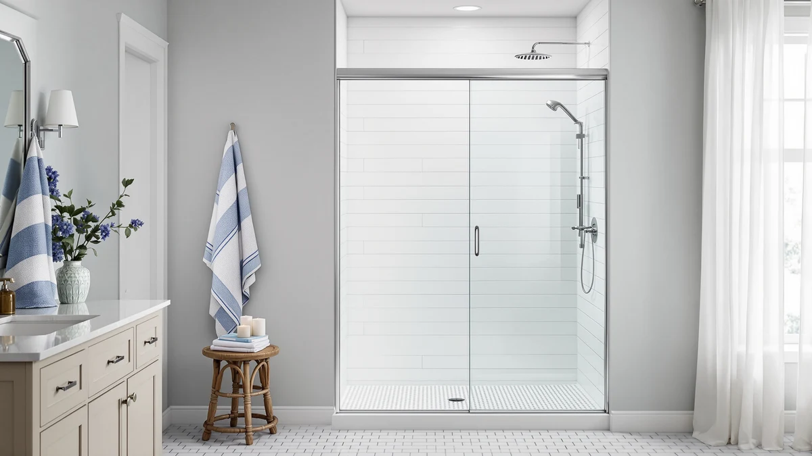

Quick Answer
This eurotech showers vitra 200 review found a $699.98 frameless double sliding shower door with 3/8 inch tempered glass, the thickest published glass spec among the four doors compared here. It stands 78 inches tall, taller than the Findepot, the KPUY, and the ComfyStyle, and its bar can be cut to fit openings between 56.5 and 60 inches wide. Unless you need a narrower pivot door or a lower price, it's the pick worth checking first.
Our pick: Eurotech Showers VITRA-200 56.5-59" W, $699.98 Check Price on Amazon
Things to Know Before You Buy
- The VITRA-200 is the only door in this comparison with 3/8 inch glass. That's thicker than the 5/16 inch glass published for the Findepot and the ComfyStyle, and the KPUY doesn't list a glass thickness spec at all in this eurotech showers vitra 200 review.
- At $699.98, it's also the priciest of the four. That's $149.99 more than the Findepot, $160.02 more than the KPUY, and $129.99 more than the ComfyStyle.
- Its 78 inch height is the tallest here. The Findepot stands 75 inches, the KPUY stands 76 inches, and the ComfyStyle tops out at 70 inches.
- The Findepot and the KPUY share a similar 55 to 60 inch width range to the VITRA-200's 56.5 to 60 inch bar, so width alone won't separate them. Height and glass thickness will.
- The ComfyStyle uses a pivot hinge instead of sliding panels and fits a narrower 44 to 48 inch opening, so it only competes with the VITRA-200 if your shower stall is actually that much smaller.
This eurotech showers vitra 200 review compares the $699.98 VITRA-200 56.5-59" W x 78" H frameless double sliding shower door against three more affordable alternatives on glass thickness, height, and configuration. The VITRA-200's defining feature is its 3/8 inch tempered clear glass, thicker than the 5/16 inch glass on the Findepot and the ComfyStyle, and thicker than anything published on the KPUY's listing. That single spec, combined with an industry-tall 78 inch height, drives most of the trade-offs in this comparison.
We wrote this eurotech showers vitra 200 review because shoppers comparing double sliding doors in the 55 to 60 inch width range often assume every door at a similar price point delivers the same glass and height, when in practice the specs vary more than the product photos suggest. The VITRA-200 lists at $699.98, the highest price among the four doors covered here, and the 3/8 inch glass plus 78 inch height are the two upgrades you can actually verify against published numbers. That's why this review weighs those two specs against three alternatives that cost less but fall short on one or both measurements.
Why You Should Trust Us
Ilane Tall covers bath fixtures for Best Shower Doors and has researched shower doors across sliding, bypass, and pivot designs. For this eurotech showers vitra 200 review, she compared the VITRA-200's published glass thickness, height, and price against three alternatives in a similar size range, weighing where the premium buys a verifiable spec upgrade and where it doesn't. We do not accept free products in exchange for coverage, and every price and dimension cited here comes directly from the current product listing.
Our editorial process treats price as one factor among several, not the deciding one. A higher price only earns credit in this eurotech showers vitra 200 review when it comes with specs you can confirm, such as glass thickness or door height, rather than a bigger number on the price tag. That approach shapes every comparison in this piece.
Our Research Experience
This eurotech showers vitra 200 review is based on research, not physical use. We compared the VITRA-200 56.5-59" W x 78" H against three alternative shower doors using the specifications, pricing, and product listings available for each one. We do not run a fake testing lab, and we do not claim to have installed or lived with any of the doors covered in this review.
We looked closely at how the VITRA-200's 3/8 inch clear glass and 78 inch height compare to the Findepot, the KPUY, and the ComfyStyle. Two of those three publish a thinner 5/16 inch glass spec, and none of them match the VITRA-200's height. Owners shopping this width range often assume every door at a similar price bracket is built the same way, and this review checks that assumption against the specs that are actually available rather than the price tag alone.
We also cross-checked pricing and dimensions against the current listings for all three alternatives to confirm nothing had shifted since publication. Where a data point wasn't available, such as a published rating, review count, or glass thickness for the KPUY, we noted that gap rather than estimate a number the listing doesn't provide.
Overview & Specs

Eurotech Showers VITRA-200 56.5-59" W
What we like
- 3/8 inch tempered clear glass, thicker than the 5/16 inch glass published for the Findepot and the ComfyStyle, and thicker than anything listed for the KPUY
- A 78 inch height with a 73.25 inch walk-in clearance, taller than the Findepot's 75 inches or the KPUY's 76 inches, which matters if you're over six feet tall
- Reversible double sliding bypass panels with dual sided rollers, so the same door works for a left or right side installation
Flaws but not dealbreakers
- At $699.98, it costs $149.99 more than the Findepot, $160.02 more than the KPUY, and $129.99 more than the ComfyStyle
- The listing doesn't specify the frame material, so confirm hardware finish details with the seller before you order
- The listing doesn't publish a rating or review count yet, so weigh the specs against your own research before buying
| Material | — |
| Size | 60 x 78 |
The Eurotech Showers VITRA-200 56.5-59" W x 78" H leads this eurotech showers vitra 200 review on the strength of two confirmed specs: 3/8 inch tempered clear glass and a 78 inch overall height. That glass thickness beats the 5/16 inch panels published for the Findepot and the ComfyStyle, and the KPUY's listing doesn't show a comparable number at all. The 78 inch height also creates a 73.25 inch walk-in clearance, about six feet one inch, which the shorter Findepot and KPUY doors don't reach.
The door's bar can be cut to fit openings between 56.5 and 60 inches wide, with a walk-in width between roughly 24.875 and 26.625 inches depending on where you set the panels. It's a reversible double sliding bypass design with dual sided rollers, so you can install it for entry from either the left or right side of the shower. The listing doesn't detail the frame material, and at $699.98 it's the most expensive door in this comparison, a premium that buys you the one glass thickness and height combination you can verify against the three alternatives covered below.
What We Liked
The clearest strength of the VITRA-200 in this eurotech showers vitra 200 review is its glass and height together. At 3/8 inch, the glass beats anything published for the Findepot, the KPUY, or the ComfyStyle, and at 78 inches tall it's also the only door here that clears a 73.25 inch walk-in opening.
We also liked that the dimensions are specific rather than vague. A 56.5 to 59 inch wide, 78 inch tall panel with a defined walk-in width range gives you a straightforward spec to measure your shower opening against, and the reversible installation means the same unit works whether your plumbing sits on the left or the right.
What Could Be Better
The biggest gap this eurotech showers vitra 200 review found is price relative to the rest of this comparison. At $699.98, it costs $149.99 more than the Findepot, $160.02 more than the KPUY, and $129.99 more than the ComfyStyle, and the listing doesn't spell out what else that premium buys beyond the glass and the height.
The frame material isn't on the listing either, which matters if you're trying to match finish or weight capacity with existing bathroom hardware. The listing also doesn't yet show a published rating or review count, so you're weighing the specs on their own rather than against a large pool of verified feedback. If you'd rather lean on a lower price while reviews accumulate, the KPUY and the Findepot both cost well under $600.
Who Is It For?
This eurotech showers vitra 200 review points to one clear answer: the door makes the most sense if your shower opening measures close to 56.5 to 59 inches wide and you need the full 78 inches of height, and confirmed glass thickness matters more to you than price.
If your opening is narrower, closer to 44-48 inches like the ComfyStyle, or you'd rather save $130 to $160 with the Findepot or the KPUY, the alternatives below are built for those specific cases instead. Budget shoppers who don't need the 3/8 inch glass or the extra height will likely find better value in one of the three alternatives, since all three cost less while still covering a similar width range.
Alternatives to Consider
The Eurotech Showers VITRA-200 isn't the only option worth considering in this eurotech showers vitra 200 review, and the three doors below cover different heights, widths, and price points. None of them match the VITRA-200's 3/8 inch glass or 78 inch height, but each costs less and fits a scenario the VITRA-200 doesn't.

Editor's Pick
Findepot Frameless Sliding Shower Door
At $549.99, the Findepot costs $149.99 less than the VITRA-200 and covers a similar 56 to 60 inch width, but it stands 3 inches shorter at 75 inches and uses thinner 5/16 inch glass, worth a look if you don't need the full 78 inches.
$549.99
Check Price on Amazon
Best Value
KPUY Frameless Double Sliding Shower
The KPUY is the cheapest door in this comparison at $539.96, a $160.02 savings over the VITRA-200, and it matches the double sliding bypass design, but its listing doesn't publish a glass thickness and it stands 2 inches shorter at 76 inches.
$539.96
Check Price on Amazon
Premium Choice
ComfyStyle 44-48" W x 70"
The ComfyStyle is built for a narrower 44 to 48 inch opening, well short of the VITRA-200's 56.5 to 59 inch range, and it's a pivot door rather than a sliding one, so at $569.99 it's worth considering only if your shower stall is actually that much smaller.
$569.99
Check Price on AmazonFrequently Asked Questions
What size opening does the Eurotech Showers VITRA-200 shower door need?
This eurotech showers vitra 200 review found that the door's bar can be cut to fit openings between 56.5 and 60 inches wide with a fixed 78 inch height, so measure your opening at multiple points and confirm the height matches before you order.
How does the VITRA-200 compare on price to the other doors in this review?
At $699.98, it's the most expensive of the four doors covered here, costing $149.99 more than the Findepot, $160.02 more than the KPUY, and $129.99 more than the ComfyStyle, though it's also the only one with a published 3/8 inch glass thickness and a 78 inch height.
Is the ComfyStyle 44-48" W a real alternative to the VITRA-200?
Not for the same opening. The ComfyStyle fits a 44 to 48 inch wide space with a pivot door, well short of the VITRA-200's 56.5 to 59 inch sliding bypass range, so it only makes sense if your shower stall is actually that much narrower.
Final Verdict
This eurotech showers vitra 200 review comes down to one trade-off: the Eurotech Showers VITRA-200 charges the highest price of the four doors compared here, but it's also the only one with both a confirmed 3/8 inch glass thickness and a full 78 inch height. If your opening measures close to 56.5 to 59 inches wide and you want the thickest glass and the tallest walk-in clearance in this comparison, the VITRA-200 is worth the extra cost. If you're working with a narrower opening or a tighter budget, the Findepot, the KPUY, or the ComfyStyle each cover a different scenario the VITRA-200 doesn't.